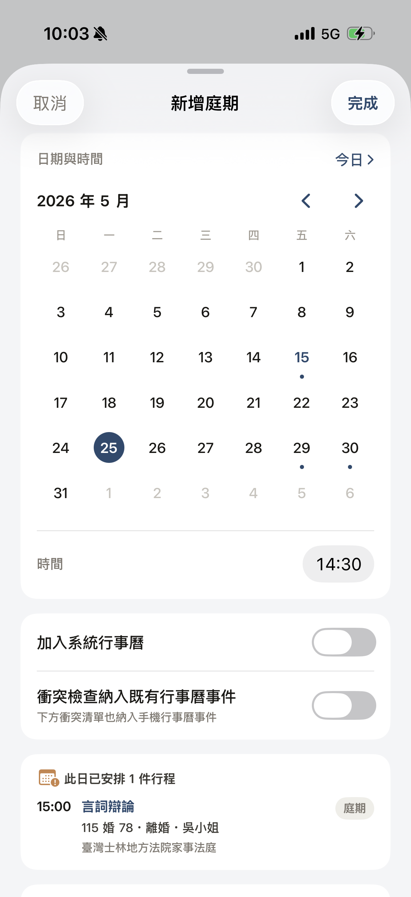
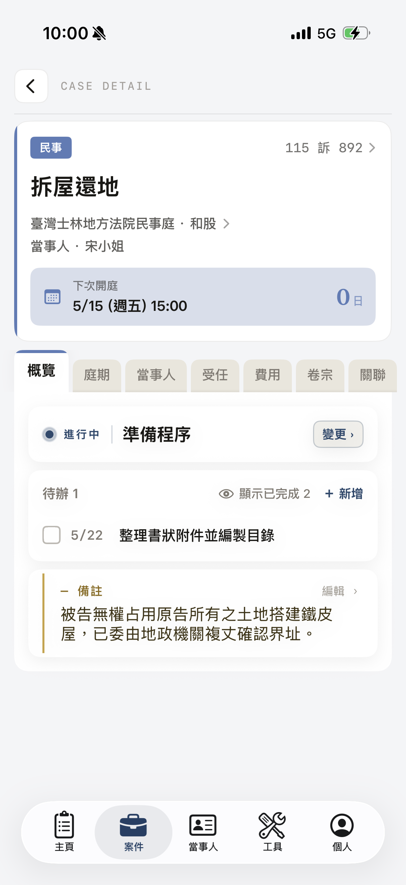

還在事務所的時候，律師們都是扛著貼滿標籤紙的紙本卷宗去法院。開庭瞬息萬變，有時就是沒有辦法馬上翻到資料，那幾秒鐘彷彿時間靜止一般。
那時候法院雖然已開放電子卷宗，但日常感覺數位化的步調還跟不上需求。
另一個讓人困擾的是案件管理。小型事務所，基於成本通常只能「自行管理」：Google Calendar、Excel、或乾脆放在大腦裡。市場上找不到合適的工具，因此，我想說要不要乾脆自己寫一套工具給自己用。
在一段準備育兒的職涯空檔，在抱持著這個想法下開始自學寫程式，後來進了 AppWorks School 的 iOS Training Program。AttorneyTech 第一版就是在 School 的四週個人專案中誕生的，2023 年底正式上架 App Store。
但說實話，上架後我就一直沒時間動它。一停就是兩年多。
真正讓它再次動起來，是這一年跟 AI 的協作，在零碎的時間裡也能一點一點把它往前推。
AI 的發展迅速，也讓我看到一件事：很多律師正在用 AI 幫自己寫案件管理系統，那一度讓我猶豫，要不要繼續改版。但我看了看現在的 AttorneyTech，它還沒長成我當初想要的樣子。所以我決定把它做完，做成當年我自己會願意每天帶進法院的那個工具。

v2.0 不只是重新拉皮而已，更是從資訊架構、流程到每一個畫面，全部重新想過一次。
左右切換看看 v2.0 的案件詳情 ── 從概覽、庭期、當事人、受任資訊、費用，到卷宗、關聯案件。

這個 app 想做的，是律師人不在事務所的時候會用到的那些東西。
最常用手機翻案件資料的場景大概是：在外面突然要查當事人資訊、要確認訴訟程序進到哪一步、在路上想看這週還剩幾場庭、月底前要核一下顧問契約還剩多少小時，或是想到一件待辦事項要綁到某個案件上，不像用內建或其他提醒事項 app，每條還得自己標註是哪個案件的事。AttorneyTech 想做到的，是這些「在外面、手邊只有手機」的時刻。
至於書狀全文、判決掃描檔、證物原檔、上百頁的卷宗 PDF，老實說目前我覺得不該由這個 app 處理。那些東西留在電腦或事務所原本的系統最安全。它不是、也不打算變成雲端硬碟。
另外目前還沒做的功能也說一下：多人協作 / 團隊共享、或是很夯的 AI 應用。AI 這塊我有在觀察，但或許會等本地模型成熟到值得用我才會加進去。
AttorneyTech 不需要註冊帳號，也沒有開發者維護的伺服器。所有案件、當事人、卷宗、工時，都只存在你的 iPhone / iPad（以及你自己的 iCloud，如果你開了同步）。我看不到你任何一筆資料。
只要你有興趣，都可以加入。
TestFlight 公開連結
使用上有任何問題、bug、或希望加入的功能，下面是兩個回報管道。